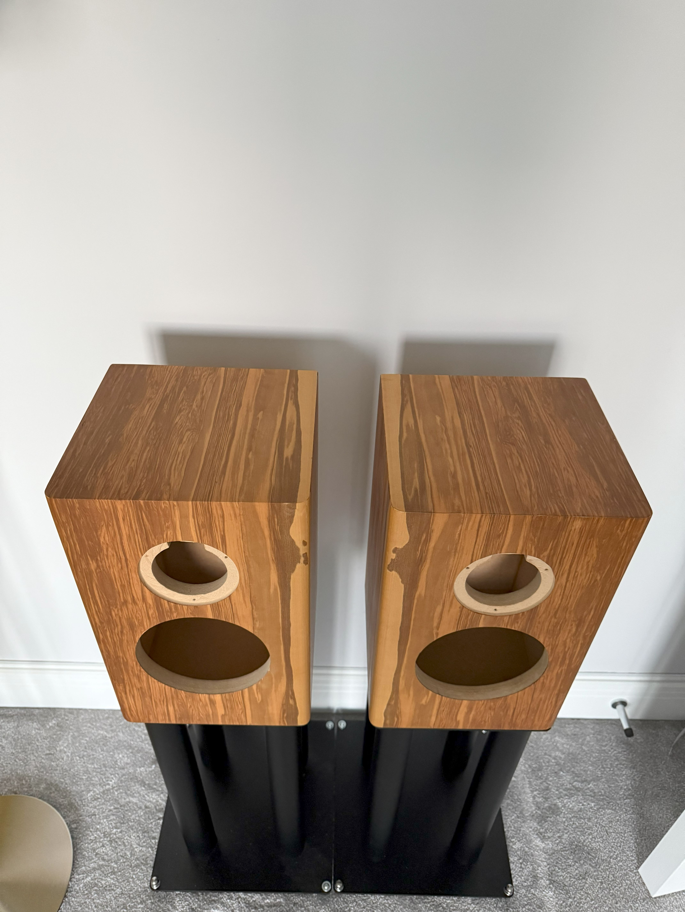
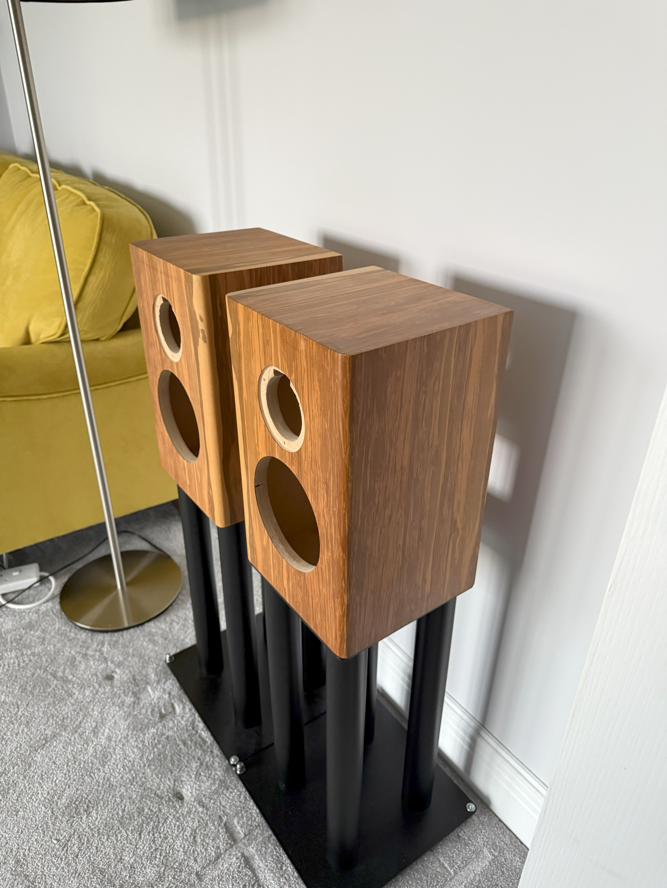

Documenting the design, construction, and crossover of a DIY Audio Note AX-2 clone loudspeaker, with
notes and photos for fellow audio enthusiasts.
Cabinet Dimensions & Cutouts
Part
Qty
Size (mm)
Notes
All panels
—
18mm Medite Premier MDF
Pre-cut by CutMy (UK), incl. driver & terminal
cutouts
Sides
2
376 x 230
Ø145 @ (42,68) woofer • Ø71 @ (79,243) tweeter
Top / Bottom
4
201 x 194
Front / Back
4
376 x 201
Rear panel
2
340 x 194
75 x 75 cutout @ (59,75) terminal plate
Drivers
The original AX-2 used a Vifa C17 6½" poly-cone woofer and a Vifa D19 19 mm soft-dome tweeter.
The C17 is long discontinued; variants appeared in many commercial speakers.
For this build I sourced both drivers from a Mission 761 (early–mid 1990s): a
6 Ω Vifa C17 and a Vifa D19 tweeter, whose voicing is very
close to the AX-2’s unit.
Part
Model / Type
Source
Nominal Z
Notes
Woofer
Vifa C17 (17 cm poly-cone)
Pair pulled from Mission 761
6 Ω
AX-2 used an 8 Ω C17; low-pass re-tuned for 6 Ω.
Tweeter
Vifa D19 (19 mm soft dome)
Pulled from Mission 761
~8 Ω (varies by variant)
Very similar character to the AX-2 tweeter.
Why the 6 Ω woofer matters:
A 6 Ω C17 raises the low-pass corner with the same inductor and changes level balance…
Build Process
Dry-fit & glue the cabinets
Test-fit pre-cut panels (butt joints). Glue with Titebond II, clamp square, and let each glue-up
cure ~24 h before the next.
Pre-cut panels laid outClamping
Tip: Check diagonals for square before tightening clamps.
Driver rebates & edge prep
Rout driver rebates with a rabbet/router circle jig. Break sharp edges on the baffle (1/2 inch
round-over) and sand to 180-220 grit.
Order & grain plan: I veneered the front (baffle) first,
then the
top so the grain flows continuously over the front edge. Next, I did the sides
aiming to
wrap the grain seamlessly around the cabinet. Finally, I veneered the bottom and
rear. This sequence hides most seams and keeps the most visible faces (front/top)
perfectly aligned.
Cut openings after veneer
From the front, cut out driver holes - I used a stanley knife. From the rear, clean the
terminal-plate opening.
Driver holes cut out
Finish prep
Final sand to 240-320 grit. Raise grain if using water-based finish; de-nib, then apply your
chosen oil/lacquer. I used OSMO Polyx Oil Clear Satin.

After oiling with OSMO

After oiling with OSMOAfter oiling with OSMO


{kind=link}
{kind=link}
{kind=link}
{kind=link}
{kind=link}
{kind=link}
{kind=link}
{kind=link}
{kind=link}